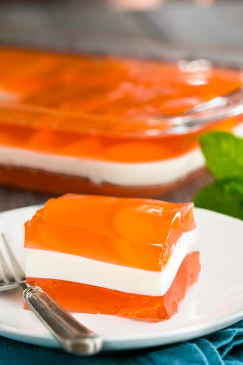
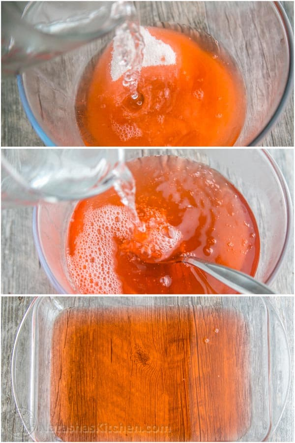
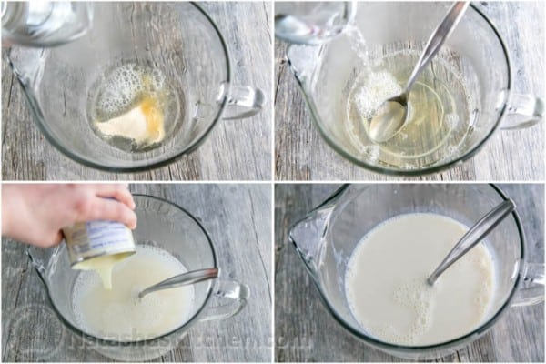
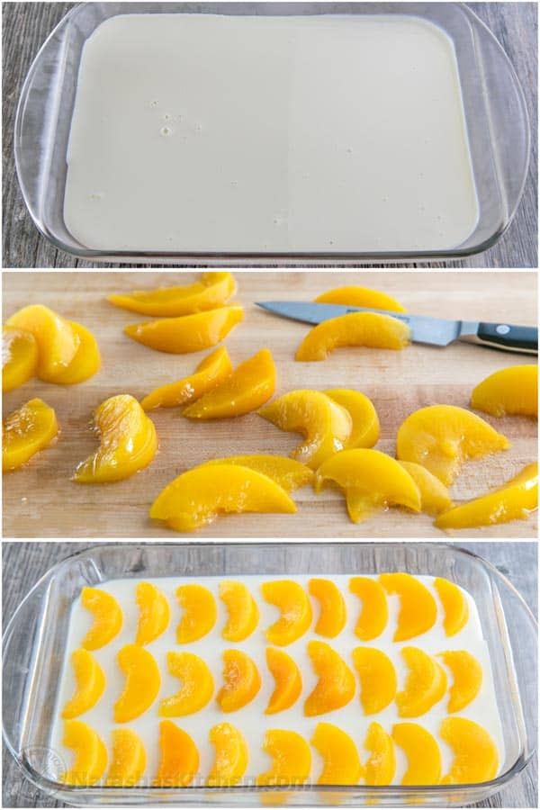
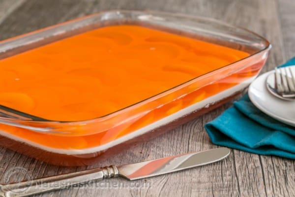

Peaches and Cream Layered Jello Recipe
November 25, 2014
My sister made this jello for our recent church potluck. I loved that it wasn’t overly sweet and the cream layer in the center was so perfectly smooth. I called her right after and wrote out the recipe in detail. I knew you all would love it too. It was my favorite dessert that day.

Ingredients for Peaches and Cream Jello:
- 2 pkgs. (6 oz each) peach jello, made according to package instructions.
- 2 packets unflavored gelatin (2 packets = 14 grams or 1 1/2 Tbsp ).
- 1 cup boiling hot water + 1 cup cold water.
- 14 oz can sweetened Condensed milk.
- 15 oz can sliced peaches, cut into 1/2″ thick slices.
How to Make a Layered Jello:
- Make the first peach flavored jello according to package instructions (I used 2 cups ice water for it to cool faster), pour into a 9×13″ glass pan and refrigerate until set (1-2 hrs).

- After the first layer of jello has been in the fridge at least 45 mins, start on your cream layer: In a medium bowl, combine 2 packets of unflavored gelatin with 1 cup boiling water and stir until fully dissolved. Stir in 1 cup cold water. Pour in condensed milk and stir with a spoon until blended. Let cream layer sit at room temp (no more than 45 min), then gently pour over your set jello layer.

- Once cream layer is nearly set (this takes about 5 min in the fridge), top with slices of peaches. Note: If you want the peaches to stay put in a pattern and not float up, you want to place them on the cream layer before it is fully set. Place back in the fridge to fully set.

- You want to start your last jello layer right after the cream layer goes into the fridge. Make the second package of peach flavored jello according to package instructions and let sit on the counter until it is room temperature (30 min – it’s faster if you use ice water) then gently pour over the top of your set peaches and refrigerate until entire jello is fully set. Note: Do not pour warm jello over the cream layer or it will start to melt and become mottled.
